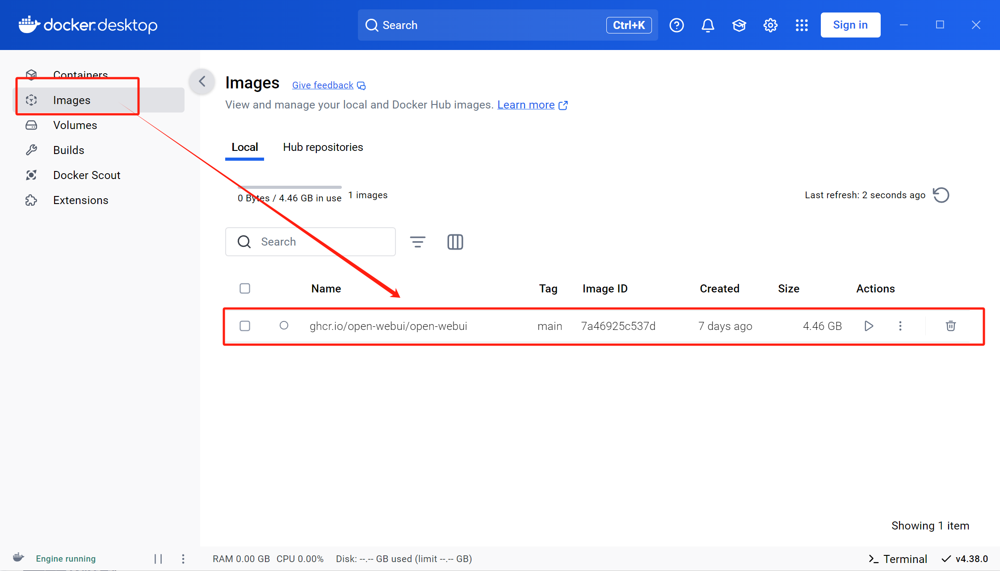

WK1-ai学习笔记（win系统）
Day01-api的使用-openai库+上下文记忆+gradio界面
（背景介绍部分未总结）
折叠day01课程笔记
openai库的调用（直接调用+autogen使用）
折叠长代码块
import openai import os openai.api_key = os.getenv("GUIJI_API") openai.api_base = "https://api.siliconflow.cn/v1" model_id = "deepseek-ai/DeepSeek-R1-Distill-Qwen-7B" messages = [ {"role": "system", "content": "你是一个老师"}, {"role": "user", "content": "你好，你是谁"}, ] response = openai.chat.completions.create( model=model_id, messages=messages, stream=True) for i in response: print(i.choices[0]["delta"]["content"], end="")import autogen import os from autogen import ConversableAgent api_key = os.getenv("GUIJI_API") # 引入两个模型，分别为千问和蒸馏的 deepseek，并设置标签稍后便于选用 llm_config = { "config_list": [ { "model": "deepseek-ai/DeepSeek-R1-Distill-Qwen-7B", "base_url": "https://api.siliconflow.cn/v1", "api_key": api_key, "tags": ["deepseek"], }, { "model": "Qwen/Qwen2.5-7B-Instruct", "base_url": "https://api.siliconflow.cn/v1", "api_key": api_key, "tags": ["qianwen"], } ] } # 选用标签为 "deepseek" 的模型作为 agent filter_model = {"tags": ["deepseek"]} # 修正为 deepseek config_model = autogen.filter_config(llm_config["config_list"], filter_model) agent_deepseek = ConversableAgent( name="deepseek", llm_config={"config_list": config_model} ) # 使用 agent 输入 message，返回回答 reply = agent_deepseek.generate_reply( messages=[ { "role": "user", # 用户输入 "content":"" } ] ) print(reply)
如何增加记忆-循环传递上下文逻辑
折叠长代码块
import autogen from openai import OpenAI import os from autogen import ConversableAgent api_key = os.getenv('GUIJI_API') # 引入两个模型，分别为千问和蒸馏的deepseek，并设置标签稍后便于选用 llm_config = {"config_list": [{"model": "Qwen/Qwen2.5-7B-Instruct", "base_url": "https://api.siliconflow.cn/v1", "api_key": api_key, "tags": ["qianwen"], }, {"model": "deepseek-ai/DeepSeek-R1-Distill-Qwen-7B", "base_url": "https://api.siliconflow.cn/v1", "api_key": api_key, "tags": ["deepseek"], } ] } # 选用标签为“deepseek”的模型作为agent filter_model = {"tags": ["deepseek"]} config_model = autogen.filter_config(llm_config["config_list"], filter_model) agent = ConversableAgent( name="deepseek", llm_config={"config_list": config_model} ) # 使用 agent 输入 message，返回回答 def generate_response(prompt, history): # 初始化输入记录 messages = [] if history: messages.extend(history) messages.append({"role": "user", "content": prompt}) # 生成回复 reply = agent.generate_reply( messages=messages ) if not history: history = [] # 更新历史记录 history.append({"role": "user", "content": prompt}) history.append({"role": "assistant", "content": reply}) return reply, history # 返回 reply 和更新后的 history if __name__ == '__main__': conversation_history = [] while True: user_input = input("你，说话！（退出 为退出指令）") if user_input == "退出": break reply, conversation_history = generate_response(user_input, conversation_history) print(reply)
用gradio库包装简单界面
折叠长代码块
import autogen from openai import OpenAI import os from autogen import ConversableAgent import gradio import os import json config_file = 'llm_config.json' default_config = { "config_list": [ { "model": "Qwen/Qwen2.5-7B-Instruct", "base_url": "https://api.siliconflow.cn/v1", "tags": ["qianwen"] }, { "model": "deepseek-ai/DeepSeek-R1-Distill-Qwen-7B", "base_url": "https://api.siliconflow.cn/v1", "tags": ["deepseek"] } ] } if not os.path.exists(config_file): with open(config_file, 'w') as file: json.dump(default_config, file) print(f"已创建默认配置文件 {config_file}") with open(config_file, 'r') as file: config_data = json.load(file) # 从环境变量中获取 API 密钥，并提供默认值或抛出异常 api_key = os.getenv('GUIJI_API') if not api_key: raise ValueError("API key is not set in environment variables") # 读取配置文件以获取模型配置 def load_llm_config(config_file='llm_config.json'): try: with open(config_file, 'r') as file: config_data = json.load(file) if "config_list" not in config_data: # 如果缺少config_list键，则使用默认配置 print(f"Warning: Missing 'config_list' key in configuration file {config_file}. Using default configuration.") return default_config return config_data except FileNotFoundError: raise FileNotFoundError(f"Configuration file {config_file} not found") except json.JSONDecodeError: raise ValueError(f"Invalid JSON format in configuration file {config_file}") # 示例配置文件内容 (llm_config.json) """ { "config_list": [ { "model": "Qwen/Qwen2.5-7B-Instruct", "base_url": "https://api.siliconflow.cn/v1", "tags": ["qianwen"] }, { "model": "deepseek-ai/DeepSeek-R1-Distill-Qwen-7B", "base_url": "https://api.siliconflow.cn/v1", "tags": ["deepseek"] } ] } """ # 加载配置并添加 API 密钥 llm_config = load_llm_config() for config in llm_config["config_list"]: config["api_key"] = api_key #选用标签为“deepseek”的模型作为agent filter_model = {"tags": ["deepseek"]} config_model = autogen.filter_config(llm_config["config_list"], filter_model) agent = ConversableAgent( name = "deepseek", llm_config = {"config_list": config_model} ) # 使用 agent 输入 message，返回回答 def generate_response(prompt, history): # 初始化输入记录 messages = [] if history: messages.extend(history) messages.append({"role": "user", "content": prompt}) # 生成回复 reply = agent.generate_reply(messages=messages) if not history: history = [] # 用append更新历史记录 history.append({"role": "user", "content": prompt}) history.append({"role": "assistant", "content": reply}) return reply, history # 返回 reply 和更新后的 history def chat_ui_gr(user_input, conversation_state = gradio.State([]), api_key = api_key, base_url = "https://api.siliconflow.cn/v1", model_id = "deepseek-ai/DeepSeek-R1-Distill-Qwen-7B"): conversation_history = conversation_state #获取对话聊天状态 reply,conversation_history = generate_response(user_input, conversation_history) #对代码稍作修改，聊天函数更改第二个参api，删掉，后两个参：url和model return f"机器人：{reply}",conversation_history # conversation_history.append({"role": "user", "content": user_input}) #更新会话历史 # conversation_history.append({"role": "assistant", "content": reply})#本段冗余，直接删掉 #删掉后改为使用generate_response返回的history进行记忆 iface = gradio.Interface( fn = chat_ui_gr, inputs = [ gradio.Textbox(lines = 2, placeholder = "说啊？说词儿啊？", label = "my问题"), gradio.State([]) #储存会话历史 ], outputs = [ gradio.Textbox(label = "机器人回答"), gradio.State() #会话历史（未输出给用户） ], title = "机器人窗口", description = "基于蒸馏版deepseek的聊天机器人", examples = [ ["你是什么模型？"],["1+1=多少？"],["刚才的计算答案等于多少？"] ] ) iface.launch(share = True)
Day02-ollama本地部署+docker+webui界面可视化
折叠讲义（预览需时间，建议回顾的时候下载下来再用）（不折叠写笔记的时候也太卡了….）
DeepSeek-R1+Ollama可视化本地部署-讲义
折叠day02课程笔记
ollama+docker内的pull准备
ollama拉取模型+通过环境变量设置下载目录
ollama常见指令介绍：
ollama serve ollama create ollama show ollama run ollama pull ollama push此处使用如下命令拉取deepseek镜像，稍后使用
ollama pull deepseek-r1:7b如需修改下载位置，则添加环境变量OLLAMA_MODELS，值为D:\ollama\models，也就是目标下载目录
docker拉取webui镜像
docker pull ghcr.io/open-webui/open-webui:cuda之后即可再docker desktop内的镜像页面查看到它，随时可将它启动为容器，如下图
 如下命令，即可使用该镜像启动一个端口为3000：8080的容器，意味着，可以通过本地的3000端口访问webui容器，不过需要确保ollama提供的端口为8080并且无占用，可以通过环境变量这样设置OLLAMA_HOST，0.0.0.0:8080
docker run -d -p 3000:8080 --add-host=host.docker.internal:host-gateway -v open-webui:/app/backend/data --name open-webui --restart always ghcr.io/open-webui/open-webui:main
{kind=link}
Day03-云服务器端部署模型（含vllm）
折叠讲义（预览需时间，建议回顾的时候下载下来再用）（不折叠写笔记的时候也太卡了….）
折叠day03课程笔记
魔搭社区下载模型—首页 · 魔搭社区
提供了以下几种下载方式，比较推荐sdk下载（在服务器端的jupyter，ipynb文件内run即可），极不推荐git下载

下载后需根据介绍页的测试用例在服务器端的运行结果，补充缺少的依赖库，此处运行无报错，并无需要补充，所以直接进行下一步
vllm框架启动模型
conda create -n myenv python=3.10 -y conda activate myenv #⽼版本conda可能需要先⽤source activate # Install vLLM with CUDA 12.1. pip install vllm再通过vllm框架直接启动该模型，注意替换模型名称
python -m vllm.entrypoints.openai.api_server \--model /root/autodl-tmp/deepseek-ai/DeepSeek-R1-Distill-Qwen-7B \--served-model-name DeepSeek-R1-Distill-Qwen-7B \ --max-model-len=2048启动成功后自动从终端进入模型问答交互
(补充：可以用ssh连接通过本地端口访问服务器，已欠费…暂无展示)
Day04-anaconda+部分编程技巧
折叠day04课程笔记(只针对记录了未完全掌握部分便于回顾)
多行代码合并为一行 【Crtl+Shift+J】
包装代码 【Crtl+Alt+T】
在上方插入新行 【Ctrl + Alt + Enter】
在下方插入新行 【Shift + Enter】
上下移动选中代码 【Alt + Shift + 上、下键】
复制代码 【Ctrl + D】
折叠代码 【Ctrl + -】
全局查找 【Ctrl + Shift+F】
Day05-提示词使用技巧和基础模板介绍
折叠讲义（预览需时间，建议回顾的时候下载下来再用）（不折叠写笔记的时候也太卡了….）
折叠day05课程笔记
通用框架：人物形象+上下文背景+具体任务+限制条件+期望输出+少样示例
原理解释：
清晰指令+上下⽂本⾝就是种“奖励”
设定约束条件就是种“惩罚”
提供⽰例就是“奖励模板”
通过迭代优化提⽰词，不断“奖励”模型部分技巧：（Takeadeepbreath）（Let’sthinkstepbystep），分治法（PromptChain-论文大纲逐阶段生成）， PromptTuning（适用于少样本模型或零样本模型微调），Prompt逆向